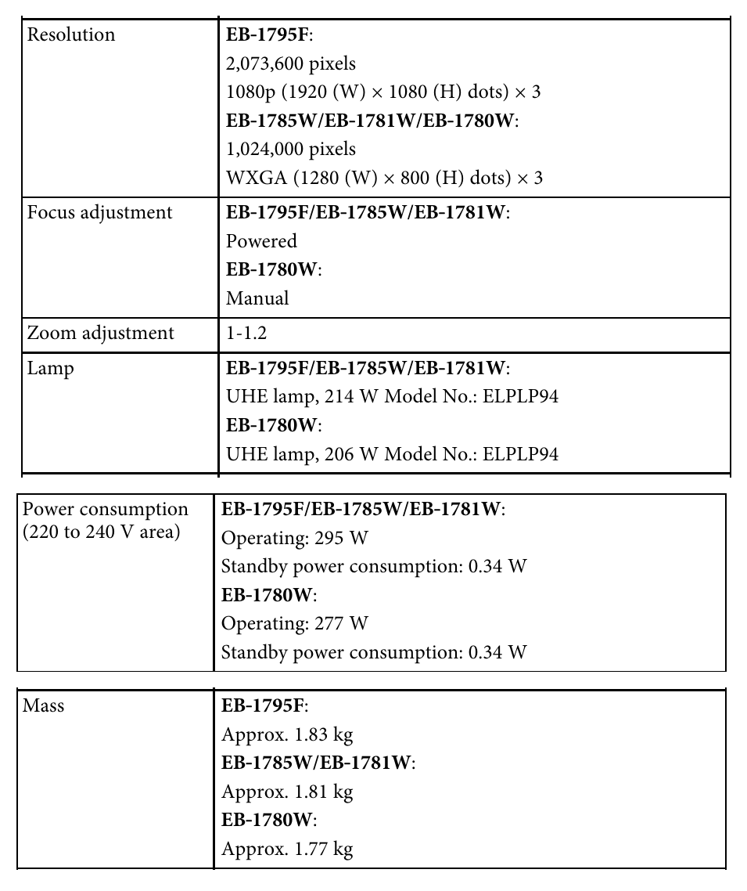
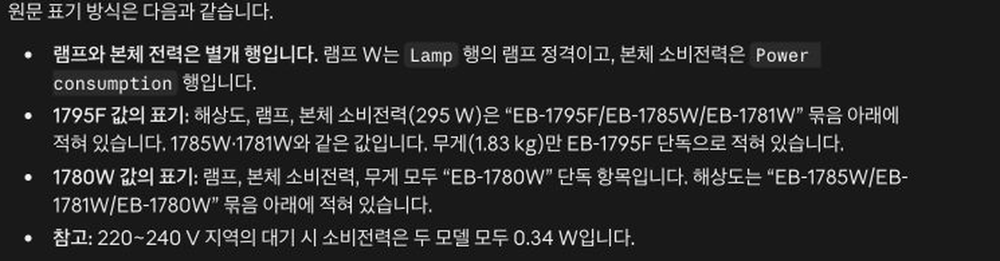
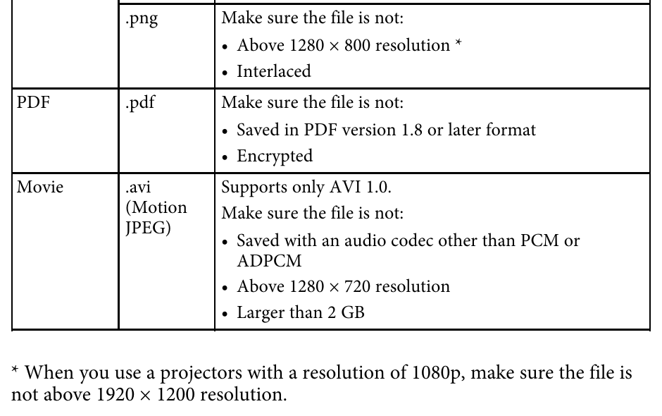
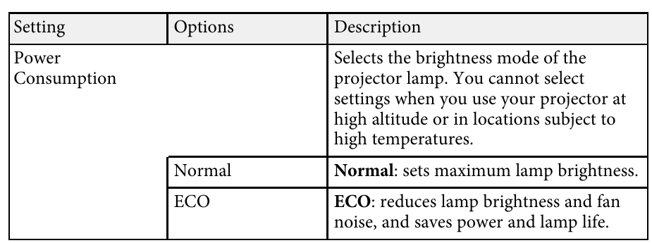

안녕하세요. dev.log입니다.
183쪽짜리 제품 설명서에서 모델 두 개를 비교하려면 AI 요약이 편리해 보입니다. 그런데 깔끔하게 정리된 표를 받았다고 해서, 작은 각주까지 확인했다고 볼 수 있을까요?
요약을 받은 뒤에는 실제 선택에 필요한 숫자와 조건을 원문 페이지와 함께 다시 물어보세요. Epson 프로젝터 설명서를 대조한 실험에서는 Claude가 숫자 8개를 모두 맞혔지만, 바로 아래 설명에서 모델별 해상도를 잘못 묶었습니다.
183쪽 설명서, 요약 한 번과 후속 질문 세 번
Claude 공식 문서는 PDF의 글·표·그림·차트를 분석할 수 있다고 안내합니다. 이 실험에서는 제품 설명서에 관해 받은 답변을 원문과 대조했습니다.
입력으로 고른 자료는 Epson이 공개한 EB-1795F·EB-1785W·EB-1781W·EB-1780W 사용 설명서입니다. 여러 모델의 사양이 한 표에 들어 있고, 파일 지원 조건에는 작은 각주도 있습니다. 2016년 영문 설명서이므로 최신 제품을 추천하는 데 쓰지 않고, 문서 읽기를 검증하는 자료로 사용했습니다.
실험은 Codex가 Claude 웹에서 진행했습니다. 2026년 10월 24일 화면에 표시된 모델은 Sonnet 5.5 · 중간이었습니다. PDF 파일 하나를 새 대화에 첨부하고 웹 검색을 끈 뒤, 먼저 중요한 사양 차이와 사용 조건을 12개 항목 이내로 요약해 달라고 요청했습니다. 이어서 같은 대화에서 아래 세 질문을 차례로 물었습니다. 정답과 판정 기준은 답변을 받기 전에 원문에서 확인해 두었습니다.
| 검증 질문 | 맞는 답의 조건 |
|---|---|
| 모델별 숫자를 구분하는가? | 해상도·램프 전력·본체 전력·무게를 모델과 단위에 맞게 제시해야 합니다. |
| 각주를 적용하는가? | PNG 파일의 기본 제한과 1080p 모델의 예외를 연결해야 합니다. |
| 근거 없는 수치를 만들지 않는가? | 정확한 팬 소음 값이 확인되지 않으면 추정하지 않아야 합니다. |
처음에는 특정 각주를 요청하지 않았으므로, 일반 요약에서 그 각주가 빠졌다는 이유만으로 오답 처리하지 않았습니다. 세 후속 질문도 같은 대화에 이어서 보냈으므로 독립 시행을 비교한 결과가 아닙니다.
Claude 웹의 도구 기록에는 PDF에서 텍스트를 추출해 검색한 과정이 표시됐습니다. 이 실험으로는 183쪽 전체를 빠짐없이 읽었는지, 스캔한 표나 그림 속 작은 글씨까지 읽을 수 있는지 판정하지 않았습니다.
숫자 표 아래에서 발견한 모델 혼동
첫 검증에서는 EB-1795F와 EB-1780W의 해상도, 램프 전력, 220~240V 지역에서 동작할 때의 본체 전력, 무게를 물었습니다. 특히 램프의 전력과 본체 전체의 소비전력을 구분하고, PDF 페이지와 원문 항목도 적어 달라고 했습니다.
설명서 173쪽에서는 해상도 행과 램프 행에 묶인 모델이 서로 다릅니다. 아래 화면은 같은 페이지에서 이번 질문에 해당하는 행들을 발췌해 모은 것입니다.

Claude가 표에 적은 8개 값은 원문과 모두 일치했습니다. 아래 AI 답변 열에는 실제 응답의 값을 옮겼으며, 두 열 모두 EB-1795F → EB-1780W 순서입니다.
| 원문에서 확인한 값 | AI 답변 | 대조 결과 |
|---|---|---|
| 해상도: 1920×1080 / 1280×800 | 1920×1080 / 1280×800 | 두 모델을 맞게 구분했습니다. |
| 램프 전력: 214W / 206W | 214W / 206W | 본체 전력과 구분했습니다. |
| 본체 전력: 295W / 277W | 295W / 277W | 220~240V의 동작 값과 일치했습니다. |
| 무게: 약 1.83kg / 약 1.77kg | 약 1.83kg / 약 1.77kg | 근삿값이라는 표현도 유지했습니다. |
그런데 Claude는 표 아래에서 모델별 사양을 묶어 설명하다가 해상도를 잘못 분류했습니다.
1795F 값의 표기: 해상도, 램프, 본체 소비전력(295 W)은 “EB-1795F/EB-1785W/EB-1781W” 묶음 아래에 적혀 있습니다. 1785W·1781W와 같은 값입니다.

인용한 문장에서 세 모델에 공통으로 적용되는 값은 램프 전력과 본체 소비전력입니다. 해상도는 EB-1795F만 1920×1080이고, EB-1785W·EB-1781W는 EB-1780W와 함께 1280×800으로 묶여 있습니다. 답변의 숫자 표는 맞았지만, 그 표를 설명하는 문장은 틀렸습니다.
따라서 이 답변은 ‘숫자 8개 일치, 모델별 사양 설명에 오류’로 기록했습니다. 표의 값만 확인하면 “이 세 모델은 해상도도 같다”는 잘못된 설명을 놓칠 수 있습니다.
PNG 파일의 허용 크기를 바꾸는 각주
다음에는 USB에 저장한 이미지를 컴퓨터 없이 투사하는 PC Free 기능을 물었습니다. 조건은 1920×1080 크기의 비인터레이스 PNG 파일이며, 다른 파일 제한은 충족한다고 가정했습니다. 설명서에서 지원하지 않는 인터레이스 방식으로 저장한 파일은 이번 질문에서 제외했습니다.
65쪽의 지원 파일 표만 보면 PNG의 해상도 상한은 1280×800입니다. 그런데 별표를 따라가면 1080p 프로젝터에서는 1920×1200까지 허용한다는 예외가 나옵니다.

Claude는 각주가 적힌 65쪽과 모델별 해상도가 적힌 173쪽을 함께 근거로 제시했습니다. 실제 답변을 짧게 발췌하면 다음과 같습니다.
EB-1795F에서는 투사할 수 있고, EB-1780W에서는 투사할 수 없습니다.
| 원문 조건 | AI가 적용한 조건 | 대조 결과 |
|---|---|---|
| 1080p 모델의 PNG 상한은 1920×1200입니다. | EB-1795F에 각주를 적용했습니다. | 주어진 파일은 허용 범위입니다. |
| 그 밖의 PNG 상한은 1280×800입니다. | EB-1780W에는 기본 제한을 적용했습니다. | 주어진 파일은 상한을 넘습니다. |
각주에는 모델명이 직접 적혀 있지 않지만, Claude는 사양표에서 어떤 모델이 1080p인지 찾아 조건을 맞게 적용했습니다. 첫 일반 요약에는 없던 PNG 예외를 구체적인 파일과 사용 상황을 묻자 찾아낸 것입니다. 이 판정은 설명서의 허용 조건을 대조한 결과이며, 실제 기기에 파일을 넣어 투사하지는 않았습니다.
팬 소음이 줄어든다는 설명에 없는 수치
마지막으로 EB-1795F를 ECO 모드로 사용할 때 팬 소음이 정확히 몇 dB(A)인지 물었습니다. dB(A)는 사람이 듣는 특성을 반영해 소음 수준을 나타내는 단위입니다. 문서에 수치가 없으면 추측하지 말고, 관련 설명과 구분해 달라고 요청했습니다.
131쪽 ECO 메뉴 설명에는 ECO 모드가 램프 밝기와 팬 소음을 줄인다고 적혀 있습니다. 얼마나 조용해지는지를 수치로 제시한 설명은 없습니다.

Claude는 다음과 같이 답했습니다.
정확한 값은 이 문서만으로 확인할 수 없고, 추정하지 않겠습니다.
| 원문에서 확인한 내용 | AI 답변 | 대조 결과 |
|---|---|---|
| ECO 모드가 팬 소음을 줄인다는 설명이 있습니다. | 소음 감소에 관한 정성적 설명으로 구분했습니다. | 설명의 범위를 유지했습니다. |
| 관련 설명과 사양표에서 정확한 dB(A) 값을 확인하지 못했습니다. | 구체적인 소음 수치를 제시하지 않았습니다. | 근거 없는 숫자를 만들지 않았습니다. |
Claude는 131쪽과 173쪽을 비롯한 관련 페이지를 근거로 제시했습니다. Codex도 별도로 PDF 전체에서 추출한 텍스트를 검색하고 두 페이지의 화면을 확인했습니다. 여기서 확인하지 못한 소음 수치가 다른 제품 자료에는 있을 수 있으므로, 구매 조건이라면 별도 사양 자료를 찾아 확인해야 합니다.
PDF 답변을 검증하는 후속 질문
다음 설명서를 올릴 때도 먼저 필요한 내용을 요약하게 한 뒤, 실제 결정에 쓰는 항목을 골라 물어보세요. 그 값을 설명한 문장도 함께 검증해 달라고 요청하세요.
숫자를 옮길 때
이 PDF만 근거로 [모델 A]와 [모델 B]의 [확인할 사양]을 비교해 주세요. 각 값에 모델명, 단위, 측정·동작 조건, PDF 뷰어 기준 페이지를 붙여 주세요. 표 아래 설명에 등장하는 ‘같다’와 ‘다르다’도 같은 근거로 다시 확인해 주세요.
사용 가능 여부를 판단할 때
[내 파일·환경·설정]에서 [하려는 기능]을 쓸 수 있나요? 본문 표뿐 아니라 별표 각주와 예외 조건까지 적용해 주세요. 가능하거나 불가능하다고 판단한 조건과 근거 페이지를 나눠 적어 주세요.
필요한 수치가 보이지 않을 때
이 문서에서 [필요한 정보]의 정확한 값을 찾을 수 있나요? 없으면 추정하지 말고 ‘문서에서 확인할 수 없음’이라고 답해 주세요. 비슷해 보이는 설명과 실제 수치 근거를 구분하고, 계산하거나 추론한 값은 별도로 표시해 주세요.
마지막에는 AI가 가리킨 페이지를 직접 열어 보세요. 숫자가 원문과 일치하는지, 내 모델과 사용 조건에도 해당하는지 확인하세요.